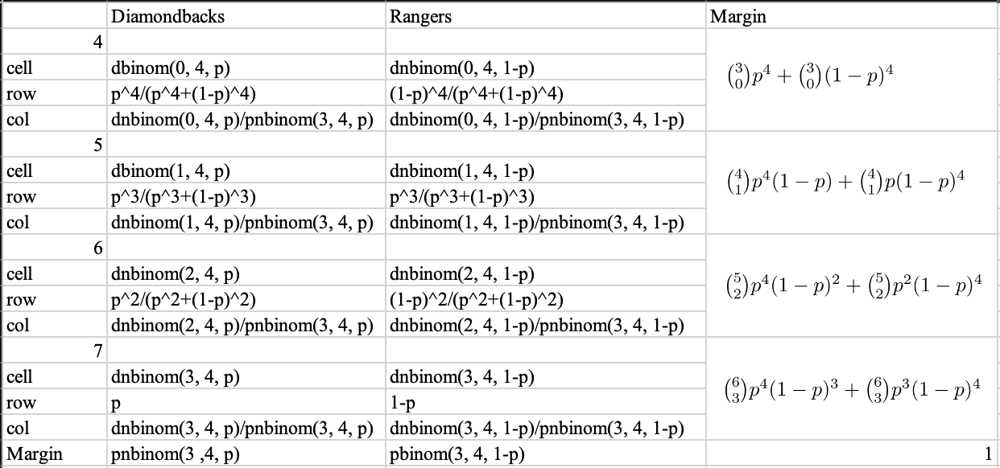
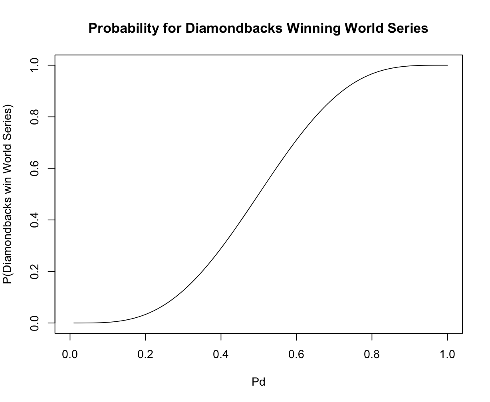
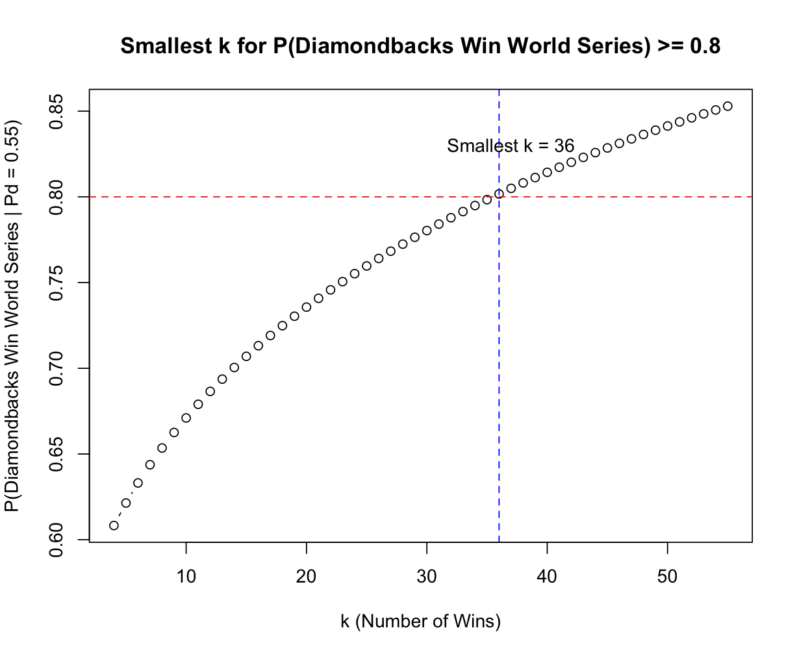
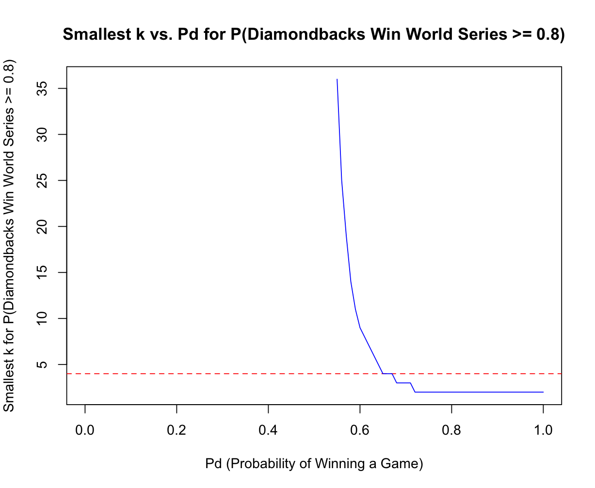

The outcome of a first-to-k-win process is a bivariate random variable because it involves two possible outcomes at each game in the series, and the series continues until one of these outcomes occurs k times. This distinguishes it from a negative bivariate, which involves the continuation of a series until one of these outcomes occurs a specified number of times. The two outcomes are interrelated; if one team wins a game, the other team loses, and they are competing for the same k total wins.
Say p is P_d within the table, then the cross table containing joint distribution of the bivariate random variable is as follows:
According to the cross table, the probability that the Diamondbacks win the World Series given that p is 0.55 is the marginal probability of pnbinom(3, 4, 0.55), which is 0.6082878.
The probability that diamondbacks would be that pnbinom(3,4,x) being on the y-axis and x being on the x axis, here’s the plot generated:
Given that someone could change the World Series to be first-to-5-wins or some other first-to-k wins series, the smallest k so that P(Diamondbacks win World Series | Pd = 0.55) >= 0.8 should be when pnbinom(k-1, k, 0.55) is greater or equal to 0.8. Then we can derive a plot (k being the x-axis and pnbinom being the y-axis) with the k ranging from 4 to 55, and we can identify the smallest k is 36.
We replace the 0.55 with x in the previous function in Q5, and plot the function with x-axis being the Pd and pnbinom being the y axis.
P(Pd = 0.55|Diamondbacks win World Series in 7 games) can be calculated using the Bayes’ rule, so that it is equal to P(Diamondbacks win WS in 7 games|Pd = 0.55) * P(Pd = 0.55)/P(Diamondbacks win WS in 7 games). P(Diamondbacks win WS in 7 games) is calculated as P(Diamondbacks win WS in 7 games|Pd = 0.55) * P(Pd=0.55) + P(Diamondbacks win WS in 7 games|Pd = 0.45) * P(Pd=0.45), so this chunk is equal to 0.6082878*0.5 / (0.6082878*0.5 + 0.3917122*0.5), which is 0.6082878.
The code to randomly generate random draws from the bivariate distribution is:
rws <- function(k, p) {
s <- rbinom(n, 1, p)
o <- sum(s) >= k
if (o == FALSE) s <- 1 - s
n <- which(cumsum(s) == k)[1]
c(o, n)
}
This function takes two inputs:
The output is structured as a vector of two elements:
This function is helpful because when considering different values of Pd and different values of k, the rws function allows you to explore a wide range of scenarios by running simulations for different parameter values. This helps in understanding how changing these parameters impacts the probability of winning the series, which could be reused multiple times without generating duplicate code.
Accounting for home-field advantage in the context of the World Series and the provided game schedule involves modifying the probabilities of winning for the Diamondbacks (AZ) and the Rangers (TX) in games played at their respective home stadiums. The distribution would change as follows:
Game 1 and Game 2 (Both in AZ):
Game 3, Game 4, and Game 5 (All in TX):
Game 6 and Game 7 (Both in AZ):